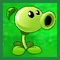
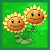
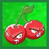
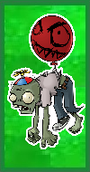
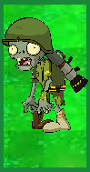

Objetivo del juego
El estilo de juego es similar a otros juegos tower defense. Los zombis aparecen mientras suena una alarma. El jugador va disponiendo diferentes plantas con distintas características de ataque o defensa en tres lugares diferentes de la casa (jardín delantero, jardín trasero y tejado) para detener a la horda de zombis que intenta devorar los cerebros de los residentes. Los zombis presentan diferentes atributos y habilidades, como cavar por debajo de las plantas o saltar por encima de estas con la ayuda de pértigas, llevar diferentes objetos como casco o conos, escaleras, globos, pogos o invocar a cuatro zombis para realizar una coreografía inspirada en "Thriller" en la que aparece un zombi caracterizado como Michael Jackson. También hay un zombi yeti (zombi secreto), que se encuentra cuando se llega al nivel 4-10 por segunda vez.
Personajes
- El vecino: el protagonista de la historia. Aunque su apariencia y género son indistinguibles (es casi seguro que es un varón ya que la voz que se escucha cada vez que el jugador pierde es masculina), su presencia se confirma desde que el resto de los personajes como Crazy Dave, el Dr. Zomboss y el resto de los zombis en general se comunican con él. Es el único personaje operable del juego. Está diseñado de manera que el jugador tome su rol y sirve como una experiencia interactiva con el juego.
- Las plantas: son plantas con diferentes habilidades y defensas en contra de los zombis.
- Crazy Dave: es el excéntrico vecino del protagonista, un hombre que admite y clama estar demente. Aunque no se explica cómo sobrevive a la invasión de los zombis, normalmente actúa como un aliado del jugador, a quien llama "vecino", y explica las características de ciertas plantas y la jugabilidad de ciertos niveles. Le gustan los tacos y, al final del juego, el jugador obtiene un taco que le pertenece.
- Dr. Zomboss: el antagonista del juego. Es un zombi que recuerda al arquetipo de científico loco. Su objetivo es devorar el cerebro del protagonista, para lo que envía diferentes zombis a atacar el vecindario. Actúa como el jefe final del juego en una confrontación en la que opera un robot gigante llamado Zombot.
- Los zombis: muertos vivientes y lacayos del Dr. Zomboss, quienes buscan comer el cerebro del vecino. Al igual que las plantas, tienen diferentes habilidades y usan objetos que incrementan el nivel de dificultad.
Banda sonora
La banda sonora de Plantas contra Zombis fue compuesta por Laura Shigihara. Toma prestados elementos de música pop, así como chiptunes de consola. Antes del inicio de Plantas contras Zombis, George Fan le preguntó a Laura si le gustaría componer la música para su próximo título, después de seguirla por algunos años, ella aceptó debido a su creatividad. Shigihara describió la música como "macabra, pero torpe". En el escenario de noche por ejemplo, se utiliza una combinación de big band y ritmos de swing con "varias melodías inquietantes y serias". Las canciones "Loonboon" y "Brainiac Maniac" fueron escritas hacia el final de la producción. Dijo que se trataba de canciones reaccionarias que escribió para adaptarse a la sensación del juego después de haber jugado un par de veces. Trató de hacer que el juego tuviera la esencia de Danny Elfman, mientras se mezclan canciones melódicas y ritmos funky. Ella escribió una canción, al principio del juego, que utiliza las percusiones de banda de marcha y ritmos de swing. También escribió otra que utiliza ritmos techno con sonidos orgánicos. Shigihara además de escribir e interpretar la versión en inglés de la canción de cierre de créditos "Zombies on Your Lawn" ("Zombies en el césped"), también escribió e interpretó la versión en japonés, "Uraniwa ni Zombies ga".
| Tabla de personajes | ||
|---|---|---|
| Plantas | ||
|  | Lanzaguisantes | Dispara guisantes a los zombis. |
|  | Girasol | Proporciona sol. |
|  | Petacereza | Explota grupos de zombis en un área pequeña. |
| Zombies | ||
|  | Zombi con globo | Va por el aire para defenderse de los ataques. Trebolador puede matarlo. |
|  | Soldado | El soldado podría considerarse como la clase fracontirador de los zombis. |
Zombie 1

Zombie 2

Planta 1

Planta 2